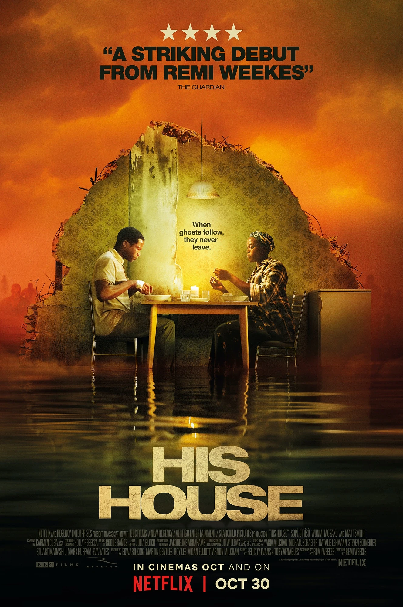
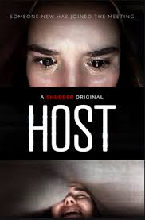
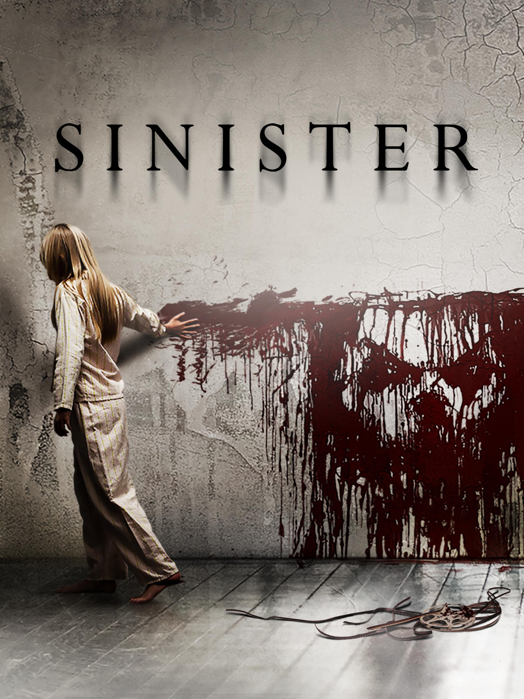

TOP 10 SCARIEST MOVIES EVER!
IF YOU HAVEN'T WATCHED IT, YOU SHOULD!
By Night Web
10 - The Conjuring

Watch the Trailer!
The Conjuring is one of the scariest films of all time. Let's revisit the horrors behind this macabre and frightening story.
Ed and Lorraine Warren are famous paranormal investigators who have confronted several supernatural cases and are seeking their respective solutions. This story brings to light the Perron family who are being terrorized by a demonic entity and ask the couple for help to get rid of this problem before the worst happens.
CURIOSITIES:
- The Warren couple and the events are real, they are both deceased but they had a daughter who has the same gifts as her mother.
- The couple has explored more than 4 thousand supernatural cases since the 1950s.
- Eight generations had lived and died in the residence with approximately 80 thousand hectares of land, all deaths occurred in terrible circumstances marked by murders, rapes and suicides.
- The situation in the house worsened when the spirit of Bathsheba Sherman tortured and possessed the body of the Perron family's mother. Bathsheba was supposedly a Satanist witch who killed a baby and hanged herself behind the barn.
- One of the Perron daughters supported the production of the film by telling us what they experienced in the house but emphasizes that the film takes it easy in relation to what the family really suffered.
- Some people from the film's production reported some kind of supernatural experience and even Lorraine Warren herself who was there said this too.
- At the end of the film Lorraine tells Ed that a priest called for the two of them to check out a case on Long Island which, interestingly enough, is the terrible Amityville house whose story is briefly told at the beginning of "The Conjuring 2".
Director: James Wan.
Year: 2013.
Duration: 1h 52m.
Rotten Tomatoes reviews:
86%
References:
Supernatural, The Exorcist, Amityville Horror.
Recommendation:
Don't watch with the lights off or alone.
Available:
Google play,
HBO Max
Night Web Rating
9 - It (The thing) (2017)

Watch the Trailer!
"It" is a film adaptation of Stephen King's terrifying novel. It brings to life the story of a group of children in the town of Derry, Maine, who are haunted by an evil entity that takes the form of a clown named Pennywise. As the kids face their deepest fears, they uncover the town's dark history and must band together to confront the evil that lurks beneath. Blending horror and coming-of-age elements, "It" offers a gripping and chilling experience that will leave you both scared and captivated.
Director: Andy Muschietti.
Year: 2017.
Duration: 2h 15m.
Rotten Tomatoes reviews: 86%
References: Stranger Things and The Goonies.
Recommendation: A must-watch for those who enjoy a mix of horror and heartfelt storytelling.
Available: HBO Max.
Night Web Rating
8 - His House
Watch the Trailer!
This film presents us with a couple of refugees from Sudan being welcomed into a residence in England, but strange things begin to happen to them in their new home, bringing to light past traumas and dark secrets that will leave you perplexed. Watch this wonderful film with a mix of social criticism and horror, which will leave you scared and very thoughtful.
Director: Remi Weekes.
Year: 2020.
Duration: 1h 33m.
Rotten Tomatoes reviews: 100%
References: Us and Run!
Recommendation: It's a film to pay more attention to the plot and get some good scares.
Available: Netflix.
Night Web Rating
7 - Insidious Part I and II

Watch the Trailer!
It introduces us to a family where one of the couple's children suffers a strange accident and falls into a coma. Still, we discover that the boy is in another dimension full of bizarre and perverse creatures, thirsty for the boy's soul, while his family on the real plane realises something is wrong, and he races against time to save his son from the "unknown". Chapter 2 follows the same narrative line and brings us solutions, mysteries revealed and more bizarre creatures. Concluding this story excellently and scarily!!!
Director: Insidious 1 and 2 - James Wan.
Year: 2010, 2013.
Duration: Part I (1h 43m) and Part II (1h 46m).
Rotten Tomatoes reviews: Part I (67%) and Part II (39%).
References:The Entity, Horror in Amytiville, The Sixth Sense.
Recommendation: Don't watch it before bed.
Available:Amazon Prime and Digital platforms(Google play).
Night Web Rating
6 - Drag Me To Hell

Watch the Trailer!
A young banker is looking to move up in her job and to impress her boss, she refuses to extend the payment deadline for the instalments on a house she had previously owned, "innocent lady", but little did she know that she was dealing with an old woman gipsy who decides to take revenge, after the treatment that the girl had given her at the bank and as a result of which the young woman will have to run after her to prevent a curse from condemning her soul once and for all in the depths of hell. Sam Raimi, director of the "Evil Dead" franchise films released in the 80s, shows again in this scary story that he is an excellent director of horror films and surprises us with his unique, surprising and fun style. You won't regret watching it, I guarantee it!
Director: Sam Raimi.
Year: 2009.
Duration: 1h 39m.
Rotten Tomatoes reviews: 92%.
References: Evil Dead, One Hallucinating Night, Master of Desires.
Recommendation: Don't eat anything while watching this film; you must have a stomach.
Available: Paramount+ and Digital plataforms(Google play).
Night Web Rating
5 - Evil Dead Rise

Watch the Trailer!
"Evil Dead Rise" This film takes the beloved Evil Dead franchise to new heights with a fresh and terrifying story set in an urban environment. When a reunion between two estranged sisters is disrupted by discovering a mysterious book, they inadvertently unleash a demonic force that wreaks havoc in their high-rise apartment building. With relentless scares, gruesome effects, and intense action, "Evil Dead Rise" reinvents the horror classic for a new generation while honouring its roots. Get ready for a terrifying ride that will keep you gripping the edge of your seat.
Director: Lee Cronin.
Year: 2023.
Duration: 1h 36m.
Rotten Tomatoes review: 84% References: The Conjuring and Hereditary.
Recommendation: Perfect for fans of visceral horror and relentless supernatural terror.
Available: HBO Max.
Night Web Rating
4 - Host
Watch the Trailer!
We recommend a film that won't let you sleep peacefully tonight. The film occurs during the pandemic when friends decide to hold a séance via video call. But something goes wrong, and they soon begin to be threatened by an evil entity, experiencing moments of great terror in their homes. New and captivating actors lead the cast. Watch this horror movie!!!
Director: Rob Savage.
Year: 2020.
Duration: 57 min.
Rotten Tomatoes review: 99%
References: The Witch of Bair, Paranormal Activity, Rec.
Recommendation: Don't watch it alone!
Available: Prime video and Apple TV.
Night Web Rating
3 - Sinister
Watch the Trailer!
It all starts with an author of crime novels who moves with his family to a new house, there he finds a box with old and very strange footage that seems to be produced by some serial killer, but when he investigates this story further, he He begins to understand that something evil is behind those films, putting his life and that of his family at risk. This film is really scary and will leave you impressed with some disturbing scenes. And according to specialized scientists, "this film is considered the scariest of all time." So will you have the courage to watch it?".
Director: Scott Derrickson.
Year: 2012.
Duration: 1h 50m.
Rotten Tomatoes reviews: 63%
References: Supernatural, Exorcism of Emily Rose, Possession.
Recommendation: Don't watch it before going to sleep.
Available: Amazon Prime video.
Night Web Rating
2 - Train To Busan

Watch the Trailer!
This indication takes us to a zombie pandemic in South Korea, where an unknown virus is dragging a wave of terror across the country. A father and his daughter seek to survive this chaos and board a train, which promises to take them to a safe place that has not been affected by the virus yet, but the journey will not be as smooth as it seems and difficult decisions will have to be made. Embark on this incredible story about survival and hard choices and prepare to be amazed by this great film about zombies!!!
Director: Yeon Sang-Ho.
Year: 2016.
Duration: 2h 1m.
Rotten Tomatoes reviews: 94%
References: Dawn of the Dead, World War Z, Rec.
Recommendation: One of the best zombie movies ever made and it's not American, watch it!!!
Available: Netflix.
Night Web Rating
1 - Hereditary

Watch the Trailer!
After the death of their grandmother, a family begins to discover strange connections and a bizarre story behind the family tree, where this triggers traumatic and frightening moments, affecting each member in a particular and frighteningly disturbing way. It's an atypical film of its genre, but it will leave you with chills down your spine.
Director: Ari Aster.
Year: 2018.
Duration: 2h 7m.
Rotten Tomatoes reviews: 89%.
References: Exorcist, The Witch, Suspiria.
Recommendation: You are not prepared for what you are going to watch and keep an eye on the details.
Available: Amazon Prime.